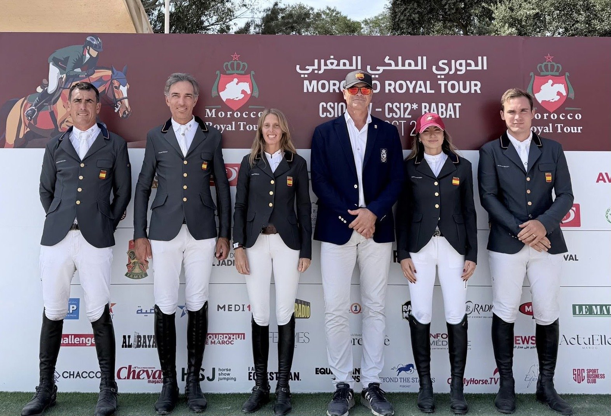

Un desempate a cuatro da a Francia la Copa de Naciones del CSIO4*-W de Rabat
Francia ganó la Copa de Naciones del CSIO4*-W de Rabat al deshacer en un desempate el empate a 4 puntos con Marruecos, Alemania y Bélgica. España terminó novena con 16 puntos.

Cuatro equipos acabaron las dos mangas con 4 puntos, y la victoria se resolvió con un jinete por país. Jeanne Sadran salió con “Dexter de Kerglenn”, hizo cero y paró el crono en 33,24 s. Nadie la mejoró.
Marruecos se quedó a 54 centésimas. Abdelkebir Ouaddar también dejó todos los palos arriba con “Festival d’Argouges”, pero en 33,78 s, lo que le valió la segunda plaza. Alemania completó el podio con Tom Schewe y “Congress Blue PS”, otro recorrido sin faltas, en 34,93 s. Bélgica fue la única de las cuatro naciones del desempate que se quedó fuera de los tres primeros puestos.
Junto a Sadran, el equipo francés lo formaron Olivier Perreau con “Leopard des Joanins Z”, Alix Ragot con “Gueule d’Amours” y Cyril Bouvard con “Diva du Rozel”.
La prueba se disputó sobre un recorrido de 1,50 m diseñado por Santiago Varela, con nueve países en pista. Solo los ocho primeros pasaban a la segunda manga, de modo que el corte dejaba fuera a un único equipo: España.
El conjunto que dirigía Francois Mathy sumó 16 puntos en la primera manga, contados sus tres mejores resultados. Pello Elorduy Ibarzabal y “Champenoise de Rampan” abrieron con 4 puntos, y Carolina Aresu García Obregón y “Domperignon” hicieron 8. Bautista Rodríguez Debray y “Vivoulette HD” volvieron a dejar 4. Armando Trapote cerró con 8 a lomos de “Caept’N Hook”.
Por Lucía Valdeolmos